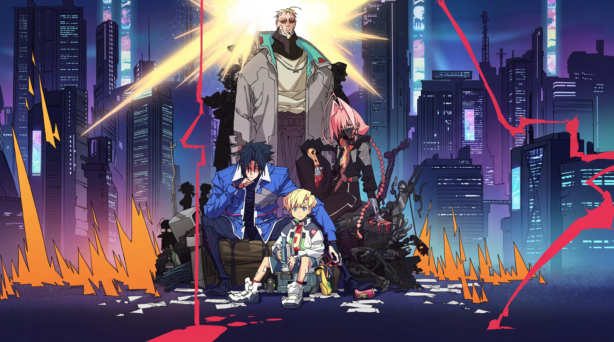

The anime will premiere this fall.
The new main characters include (clockwise from top in visual on right) Weak Kingsley, Talia Yang, Roman Carax, and D.
Kai Ikarashi (who was a storyboard artist, animation director, animator, and prop designer for the first series) is helming the new series in his directorial debut. Cyberpunk: Edgerunners producer and writer Bartosz Sztybor is again working on the series, and Ichigo Kanno (animation director and key animator on the first series) is the lead character designer. Masahiko Otsuka is returning as the scriptwriter. The new series will stream on Netflix.